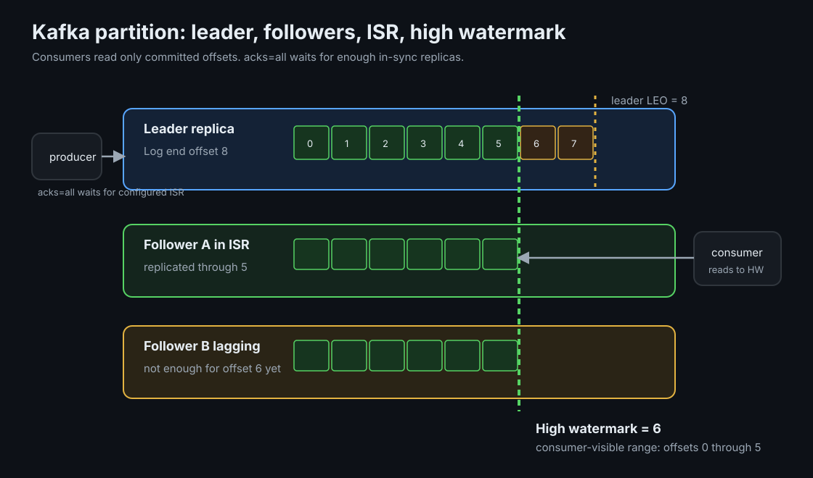
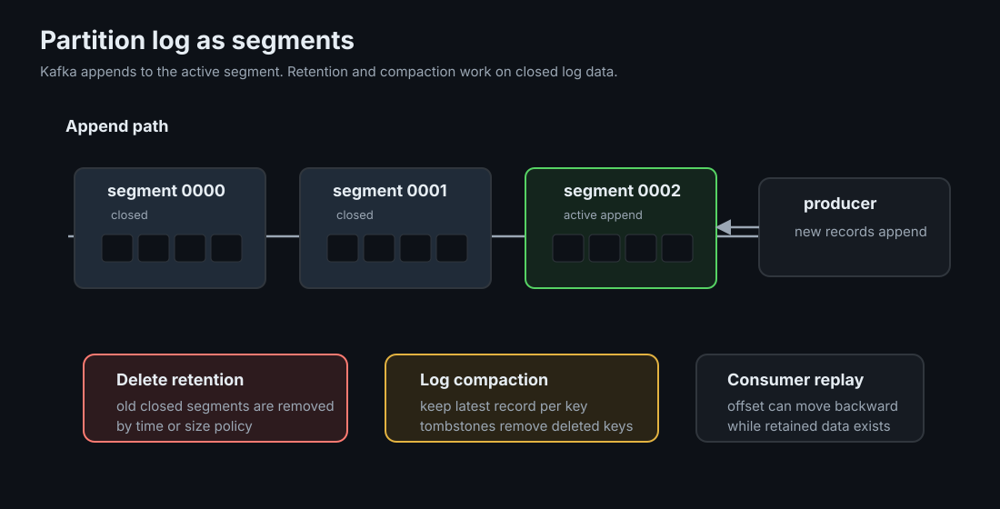

Kafka Internals: Partitions, ISR, and What an Ack Promises
Kafka is a replicated, partitioned commit log. Its guarantees follow from log append, leader-based replication, consumer-owned offsets, and metadata coordination.
TLDR
- Ordering is per partition: same key means same partition and ordered records; different keys can interleave.
- Consumers own position: brokers delete by retention, not by consumption, so replay is just a committed offset change.
- An ack is a configured durability promise:
acks=1is leader-local;acks=allwith enough in-sync replicas turns single-broker loss into visible write failure. - Fast reads come from storage design: append-only files, page cache, batching, compression, and zero-copy reads reduce broker overhead.
Mental Model
Picture a topic as several independent append-only logs. A producer chooses one log, usually by hashing the record key, and appends to its leader broker. Followers copy from the leader. Consumers do not receive messages as destructive queue pops; they pull from offsets they store separately. Nothing is deleted on read.
This gives Kafka its shape: partitions are the unit of ordering, parallelism, and failure; replicas are the unit of durability; offsets are the unit of consumer progress. Most design choices are trade-offs between those three units.

Ground-Up Explanation
Partitions and keys
A partition is one ordered log. The producer's partitioner maps each record to one partition. Equal keys should land in the same partition, which preserves per-key order and gives all events for one entity to one consumer at a time. The cost is load shape: a hot key is a hot partition, and a low-cardinality keyspace can leave some partitions underused.
Replication and the ISR
Each partition has one leader. Producers and consumers talk to that leader; followers fetch records from it. The in-sync replica set, or ISR, is the set of replicas close enough to the leader to be considered safe. The high watermark is the highest offset replicated to all required in-sync replicas; consumers only read up to committed data so failover does not expose records that may disappear.
When the leader dies, the controller elects a new leader from eligible replicas. With unclean leader election disabled, Kafka prefers unavailability over choosing a stale replica that can lose acknowledged records.
Consumer groups and offsets
A consumer group divides partitions among members. One partition is owned by at most one member of a group at a time, which preserves partition order for that group. Offsets are stored in Kafka's internal __consumer_offsets topic. Automatic commits hide the timing decision; manual commits make the application choose whether progress is recorded before or after processing.
auto.offset.reset decides where a new group starts when no committed offset exists: earliest, latest, or error depending on client. It does not decide normal crash recovery, where the committed offset is already present.
Concept Deep Dive
The log is segments, not one endless file
Each partition log is split into segment files. Kafka appends to the active segment, rolls a new segment by size or time, and applies retention to closed segments. Delete cleanup removes old segments by time or size. Compaction is different: it keeps the latest record per key and tombstones deleted keys after the delete retention window. A compacted topic is still an append log, but old values for a key can be removed once a newer value exists.

Producer batching, compression, and idempotence
Producers batch records per partition before sending. linger.ms intentionally waits a small time for more records so bigger batches can amortize request overhead and compress better. Compression works best across batches, not tiny single records. The idempotent producer adds sequence numbers per partition so retried sends do not create duplicates within the producer session.
Replication mechanics
Followers fetch from leaders like consumers. ISR membership changes when followers fall too far behind, commonly controlled by replica.lag.time.max.ms. min.insync.replicas then decides whether writes with acks=all may continue. Leader epoch tracks leadership generations so replicas and clients can detect stale leaders and truncate divergent log tails safely.
KRaft metadata quorum
Kafka now stores cluster metadata in a Raft-based controller quorum, commonly called KRaft. This quorum manages topic metadata, partition leadership, broker registration, and configuration changes. It is separate from data replication: partition records still live in broker logs and replicate through leader-follower fetch, while the controller quorum decides who should lead and what the cluster layout is.
Why reads are fast
Kafka stores log segments as files and leans on the operating system page cache. Sequential append is friendly to disks and SSDs. Reads often come from cached pages. For network transfer, Kafka can use zero-copy paths such as sendfile, moving bytes from file cache to socket without bouncing through user-space buffers. The result is high throughput with relatively simple storage mechanics.
Partition sizing
A rough sizing rule is target throughput divided by sustainable per-partition throughput, then add headroom. More partitions increase parallelism and recovery work; fewer partitions simplify ordering and reduce metadata overhead. You can add partitions later, but doing so can change key-to-partition mapping for future records, so partition count is an early design decision with long memory.
Implementation Details
- Choose keys from invariants: key by the entity that needs ordered handling; avoid keys with tiny cardinality under high volume.
- Use durable producer settings for important events:
acks=all, idempotence enabled, and a replication policy that keeps enough ISR members available. - Manual commits make timing explicit: place offset commits where the delivery semantics page says they belong.
- Monitor lag in layers: consumer lag, ISR shrinkage, under-replicated partitions, offline partitions, controller health, and disk usage each point to different failure classes.
- Retention is not acknowledgement: keep data long enough for replay, backfills, slow consumers, and audit needs.
Lab Evidence
The runnable lab is labs/kafka/internals: a 3-broker KRaft cluster, a payments topic (6 partitions, RF 3, min.insync.replicas=2), and a Go driver producing sequence-numbered messages so loss and duplication are countable facts.
make break
acks=1 producer + make kill on a broker mid-run. The audit scans all partitions and exits 1 on missing sequences.
make test
acks=all under the same kill: failed sends are visible errors; audit finds every acked sequence.
make consume ×2
Two group members: watch the coordinator split 6 partitions 3/3, then hand them back when one leaves.
Measured: happy path and partition skew
Verified on 2026-07-07: the 3-broker cluster forms, leaders spread across brokers, and a 600-message keyed produce audits clean (600 unique sequences, 0 duplicates, 0 missing). The audit's per-partition counts taught something the page did not plan to: 10 keys hashed onto 6 partitions gave two partitions 180 messages and the rest 60, a 3x hot-partition skew from key cardinality alone.
partition 0: 60 partition 1: 60 partition 2: 60
partition 3: 60 partition 4: 180 partition 5: 180
unique sequences found: 600, duplicates: 0, missing: 0 => exit 0The make break broker-kill loss window is scripted but not yet captured; its evidence will be added after a recorded run.
Production Notes
- Partition count is close to permanent. You can add partitions, but you cannot remove them, and key mapping can change for future records.
- Compacted topics are excellent for latest-state streams, but they are not immutable audit logs. Use delete retention when every historical event matters.
unclean.leader.election.enable=falsechooses unavailability over data loss when no clean leader exists. Turning it on is a data-loss decision.- Rebalance storms affect application behavior: slow processing, missed heartbeats, and partition movement can stop useful consumption even while brokers look healthy.
Code Pointers
| Code | Why it matters |
|---|---|
cmd/internals/main.go | Producer with configurable acks, group consumer with rebalance logging, and the partition-scanning audit. |
internals/compose.yaml | A 3-broker KRaft cluster in ~70 lines: quorum voters, listeners, shared cluster id. |
Further Reading & Watching
- Kafka documentation: Design, replication, ISR, and delivery guarantees from the source; verify claims here against it.
- The Log by Jay Kreps. The essay that explains why Kafka is shaped the way it is.
- Kafka: a Distributed Messaging System for Log Processing, the original NetDB '11 paper.
- Hands-free Kafka Replication, why ISR-based replication instead of majority quorums.
- Why Kafka doesn't need fsync to be safe by Jack Vanlightly; recovery semantics in depth.
- Confluent: Apache Kafka 101, free video course; the internals modules are the useful ones.
- KRaft explained, the metadata quorum that replaced ZooKeeper.
- Book: Martin Kleppmann, Designing Data-Intensive Applications, ch. 5 (replication) and ch. 11 (stream processing).
- Book: Gwen Shapira et al., Kafka: The Definitive Guide, 2nd ed., free PDF via Confluent; ch. 6 covers reliability guarantees.